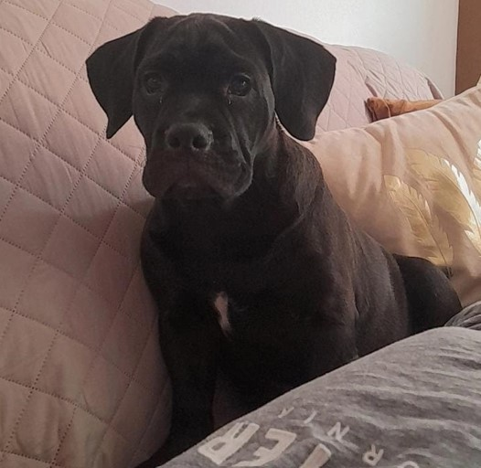

Foto de 3 meses
ODIN
Estado:
Hechado de panza
Es un perro el cual no suele responder a su nombre pero mueve mucho la cola al ver a personas. Sabe dar la pata, dar vueltas, hecharse y sentarse. No es agresivo ni muy energico pero puede llegar a estimularse mucho con personas u otros animales
Número de Contacto:
+51 946564403📱Dirección:
URB. MONTERRICO HZ H LT 16 🗺️Caracteristicas:
Tiene una macha blanca en el pecho, la piel muy estirada, orejas grandes, cuerpo fornido, pelaje negro con reflejos café, camina moviendo la cadera como un bulldog y su cola tiene una pequeña desviación